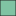
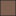

<!doctype html>
<html lang="en">
    <head>
        <meta charset="utf-8">
        <meta http-equiv="X-UA-Compatible" content="IE=edge">
        <meta name="viewport" content="initial-scale=1,user-scalable=no,maximum-scale=1,width=device-width">
        <meta name="mobile-web-app-capable" content="yes">
        <meta name="apple-mobile-web-app-capable" content="yes">
        <link rel="stylesheet" href="css/leaflet.css">
        <link rel="stylesheet" href="css/L.Control.Layers.Tree.css">
        <link rel="stylesheet" href="css/qgis2web.css">
        <link rel="stylesheet" href="css/fontawesome-all.min.css">
        <style>
        #map {
            width: 980px;
            height: 563px;
        }
        </style>
        <title></title>
    </head>
    <body>
        <div id="map">
        </div>
        <script src="js/qgis2web_expressions.js"></script>
        <script src="js/leaflet.js"></script>
        <script src="js/L.Control.Layers.Tree.min.js"></script>
        <script src="js/leaflet.rotatedMarker.js"></script>
        <script src="js/leaflet.pattern.js"></script>
        <script src="js/leaflet-hash.js"></script>
        <script src="js/Autolinker.min.js"></script>
        <script src="js/rbush.min.js"></script>
        <script src="js/labelgun.min.js"></script>
        <script src="js/labels.js"></script>
        <script src="data/Bivariate_0.js"></script>
        <script>
        var map = L.map('map', {
            zoomControl:false, maxZoom:28, minZoom:1
        }).fitBounds([[-6.019623447946602,118.87955609271506],[-1.524704562257904,126.7156178934344]]);
        var hash = new L.Hash(map);
        map.attributionControl.setPrefix('<a href="https://github.com/tomchadwin/qgis2web" target="_blank">qgis2web</a> &middot; <a href="https://leafletjs.com" title="A JS library for interactive maps">Leaflet</a> &middot; <a href="https://qgis.org">QGIS</a>');
        var autolinker = new Autolinker({truncate: {length: 30, location: 'smart'}});
        // remove popup's row if "visible-with-data"
        function removeEmptyRowsFromPopupContent(content, feature) {
         var tempDiv = document.createElement('div');
         tempDiv.innerHTML = content;
         var rows = tempDiv.querySelectorAll('tr');
         for (var i = 0; i < rows.length; i++) {
             var td = rows[i].querySelector('td.visible-with-data');
             var key = td ? td.id : '';
             if (td && td.classList.contains('visible-with-data') && feature.properties[key] == null) {
                 rows[i].parentNode.removeChild(rows[i]);
             }
         }
         return tempDiv.innerHTML;
        }
        // add class to format popup if it contains media
		function addClassToPopupIfMedia(content, popup) {
			var tempDiv = document.createElement('div');
			tempDiv.innerHTML = content;
			if (tempDiv.querySelector('td img')) {
				popup._contentNode.classList.add('media');
					// Delay to force the redraw
					setTimeout(function() {
						popup.update();
					}, 10);
			} else {
				popup._contentNode.classList.remove('media');
			}
		}
        var zoomControl = L.control.zoom({
            position: 'topleft'
        }).addTo(map);
        var bounds_group = new L.featureGroup([]);
        function setBounds() {
        }
        function pop_Bivariate_0(feature, layer) {
            var popupContent = '<table>\
                    <tr>\
                        <td class="visible-with-data" id="regency"colspan="2"><strong>regency</strong><br />' + (feature.properties['regency'] !== null ? autolinker.link(feature.properties['regency'].toLocaleString()) : '') + '</td>\
                    </tr>\
                    <tr>\
                        <th scope="row">Bivariate_Connectivity (m/ Km)</th>\
                        <td class="visible-with-data" id="Bivariate_Connectivity (m/ Km)">' + (feature.properties['Bivariate_Connectivity (m/ Km)'] !== null ? autolinker.link(feature.properties['Bivariate_Connectivity (m/ Km)'].toLocaleString()) : '') + '</td>\
                    </tr>\
                    <tr>\
                        <th scope="row">Bivariate_Accesibiliity (km/ km2)</th>\
                        <td class="visible-with-data" id="Bivariate_Accesibiliity (km/ km2)">' + (feature.properties['Bivariate_Accesibiliity (km/ km2)'] !== null ? autolinker.link(feature.properties['Bivariate_Accesibiliity (km/ km2)'].toLocaleString()) : '') + '</td>\
                    </tr>\
                </table>';
            var content = removeEmptyRowsFromPopupContent(popupContent, feature);
			layer.on('popupopen', function(e) {
				addClassToPopupIfMedia(content, e.popup);
			});
			layer.bindPopup(content, { maxHeight: 400 });
        }

        function style_Bivariate_0_0(feature) {
            switch(String(feature.properties['Bivariate_Kategori Warna'])) {
                case 'G1':
                    return {
                pane: 'pane_Bivariate_0',
                opacity: 1,
                color: 'rgba(35,35,35,1.0)',
                dashArray: '',
                lineCap: 'butt',
                lineJoin: 'miter',
                weight: 1.0, 
                fill: true,
                fillOpacity: 1,
                fillColor: 'rgba(255,255,255,1.0)',
                interactive: true,
            }
                    break;
                case 'G2':
                    return {
                pane: 'pane_Bivariate_0',
                opacity: 1,
                color: 'rgba(35,35,35,1.0)',
                dashArray: '',
                lineCap: 'butt',
                lineJoin: 'miter',
                weight: 1.0, 
                fill: true,
                fillOpacity: 1,
                fillColor: 'rgba(255,128,128,1.0)',
                interactive: true,
            }
                    break;
                case 'G4':
                    return {
                pane: 'pane_Bivariate_0',
                opacity: 1,
                color: 'rgba(35,35,35,1.0)',
                dashArray: '',
                lineCap: 'butt',
                lineJoin: 'miter',
                weight: 1.0, 
                fill: true,
                fillOpacity: 1,
                fillColor: 'rgba(128,195,163,1.0)',
                interactive: true,
            }
                    break;
                case 'G5':
                    return {
                pane: 'pane_Bivariate_0',
                opacity: 1,
                color: 'rgba(35,35,35,1.0)',
                dashArray: '',
                lineCap: 'butt',
                lineJoin: 'miter',
                weight: 1.0, 
                fill: true,
                fillOpacity: 1,
                fillColor: 'rgba(128,98,82,1.0)',
                interactive: true,
            }
                    break;
                case 'G6':
                    return {
                pane: 'pane_Bivariate_0',
                opacity: 1,
                color: 'rgba(35,35,35,1.0)',
                dashArray: '',
                lineCap: 'butt',
                lineJoin: 'miter',
                weight: 1.0, 
                fill: true,
                fillOpacity: 1,
                fillColor: 'rgba(128,0,0,1.0)',
                interactive: true,
            }
                    break;
                case 'G7':
                    return {
                pane: 'pane_Bivariate_0',
                opacity: 1,
                color: 'rgba(35,35,35,1.0)',
                dashArray: '',
                lineCap: 'butt',
                lineJoin: 'miter',
                weight: 1.0, 
                fill: true,
                fillOpacity: 1,
                fillColor: 'rgba(0,136,70,1.0)',
                interactive: true,
            }
                    break;
                case 'G8':
                    return {
                pane: 'pane_Bivariate_0',
                opacity: 1,
                color: 'rgba(35,35,35,1.0)',
                dashArray: '',
                lineCap: 'butt',
                lineJoin: 'miter',
                weight: 1.0, 
                fill: true,
                fillOpacity: 1,
                fillColor: 'rgba(0,68,35,1.0)',
                interactive: true,
            }
                    break;
            }
        }
        map.createPane('pane_Bivariate_0');
        map.getPane('pane_Bivariate_0').style.zIndex = 400;
        map.getPane('pane_Bivariate_0').style['mix-blend-mode'] = 'normal';
        var layer_Bivariate_0 = new L.geoJson(json_Bivariate_0, {
            attribution: '',
            interactive: true,
            dataVar: 'json_Bivariate_0',
            layerName: 'layer_Bivariate_0',
            pane: 'pane_Bivariate_0',
            onEachFeature: pop_Bivariate_0,
            style: style_Bivariate_0_0,
        });
        bounds_group.addLayer(layer_Bivariate_0);
        map.addLayer(layer_Bivariate_0);
        var baseMaps = {};
        var overlaysTree = [
        {label: '<b>Bivariate</b>', selectAllCheckbox: true, children: [
            {label: 'Bivariate<br /><table><tr><td style="text-align: center;"></td><td>G1</td></tr><tr><td style="text-align: center;"></td><td>G2</td></tr><tr><td style="text-align: center;"></td><td>G4</td></tr><tr><td style="text-align: center;"></td><td>G5</td></tr><tr><td style="text-align: center;"></td><td>G6</td></tr><tr><td style="text-align: center;"></td><td>G7</td></tr><tr><td style="text-align: center;"></td><td>G8</td></tr></table>', layer: layer_Bivariate_0},]},]
        var lay = L.control.layers.tree(null, overlaysTree,{
            //namedToggle: true,
            //selectorBack: false,
            //closedSymbol: '&#8862; &#x1f5c0;',
            //openedSymbol: '&#8863; &#x1f5c1;',
            //collapseAll: 'Collapse all',
            //expandAll: 'Expand all',
            collapsed: false, 
        });
        lay.addTo(map);
		document.addEventListener("DOMContentLoaded", function() {
            // set new Layers List height which considers toggle icon
            function newLayersListHeight() {
                var layerScrollbarElement = document.querySelector('.leaflet-control-layers-scrollbar');
                if (layerScrollbarElement) {
                    var layersListElement = document.querySelector('.leaflet-control-layers-list');
                    var originalHeight = layersListElement.style.height 
                        || window.getComputedStyle(layersListElement).height;
                    var newHeight = parseFloat(originalHeight) - 50;
                    layersListElement.style.height = newHeight + 'px';
                }
            }
            var isLayersListExpanded = true;
            var controlLayersElement = document.querySelector('.leaflet-control-layers');
            var toggleLayerControl = document.querySelector('.leaflet-control-layers-toggle');
            // toggle Collapsed/Expanded and apply new Layers List height
            toggleLayerControl.addEventListener('click', function() {
                if (isLayersListExpanded) {
                    controlLayersElement.classList.remove('leaflet-control-layers-expanded');
                } else {
                    controlLayersElement.classList.add('leaflet-control-layers-expanded');
                }
                isLayersListExpanded = !isLayersListExpanded;
                newLayersListHeight()
            });	
			// apply new Layers List height if toggle layerstree
			if (controlLayersElement) {
				controlLayersElement.addEventListener('click', function(event) {
					var toggleLayerHeaderPointer = event.target.closest('.leaflet-layerstree-header-pointer span');
					if (toggleLayerHeaderPointer) {
						newLayersListHeight();
					}
				});
			}
            // Collapsed/Expanded at Start to apply new height
            setTimeout(function() {
                toggleLayerControl.click();
            }, 10);
            setTimeout(function() {
                toggleLayerControl.click();
            }, 10);
            // Collapsed touch/small screen
            var isSmallScreen = window.innerWidth < 650;
            if (isSmallScreen) {
                setTimeout(function() {
                    controlLayersElement.classList.remove('leaflet-control-layers-expanded');
                    isLayersListExpanded = !isLayersListExpanded;
                }, 500);
            }  
        });       
        setBounds();
        var i = 0;
        layer_Bivariate_0.eachLayer(function(layer) {
            var context = {
                feature: layer.feature,
                variables: {}
            };
            layer.bindTooltip((layer.feature.properties['regency'] !== null?String('<div style="color: #323232; font-size: 10pt; font-family: \'MS Shell Dlg 2\', sans-serif;">' + layer.feature.properties['regency']) + '</div>':''), {permanent: true, offset: [-0, -16], className: 'css_Bivariate_0'});
            labels.push(layer);
            totalMarkers += 1;
              layer.added = true;
              addLabel(layer, i);
              i++;
        });
        resetLabels([layer_Bivariate_0]);
        map.on("zoomend", function(){
            resetLabels([layer_Bivariate_0]);
        });
        map.on("layeradd", function(){
            resetLabels([layer_Bivariate_0]);
        });
        map.on("layerremove", function(){
            resetLabels([layer_Bivariate_0]);
        });
        </script>
    </body>
</html>
